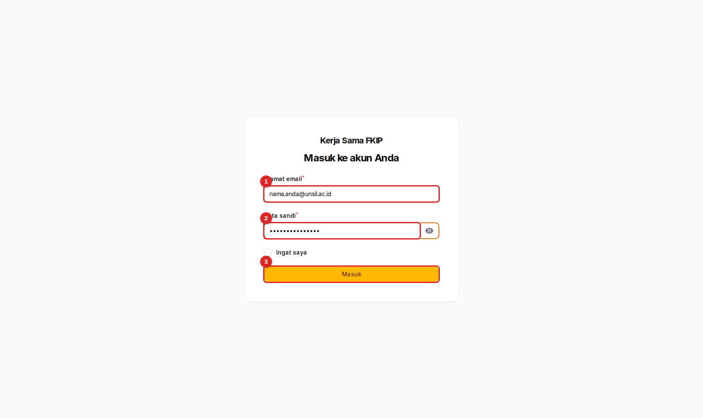
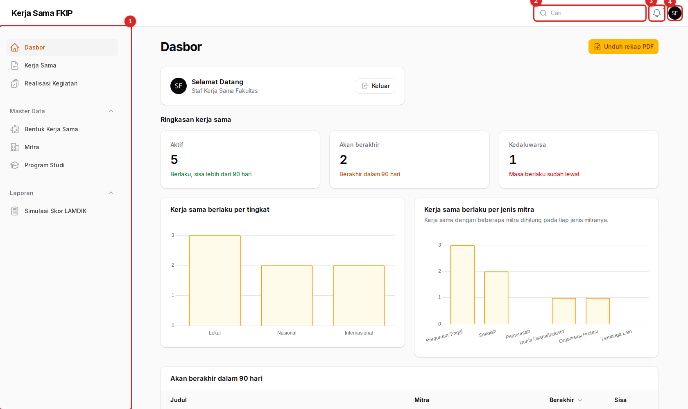
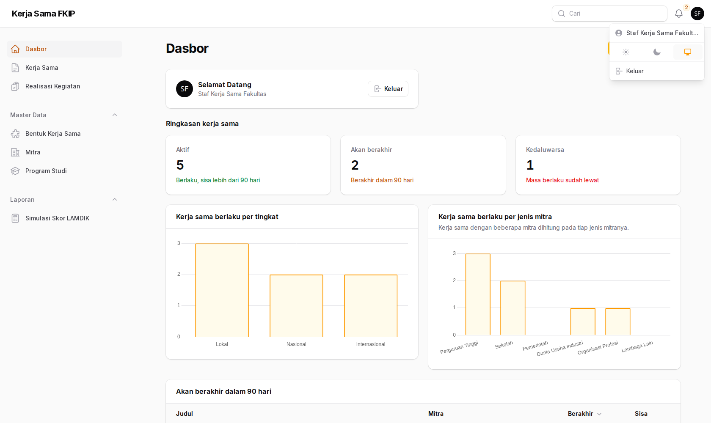

Panduan Pengguna
Panduan bergambar untuk menggunakan Sistem Kerja Sama FKIP Universitas Siliwangi. Pilih peran Anda, atau baca dasar-dasar yang berlaku untuk semua pengguna.
01Pilih peran Anda
Setiap peran punya panduan sendiri, lengkap dengan gambar layar dan penjelasan langkah demi langkah.
Dekan, wakil dekan, kaprodi
Memantau kondisi kerja sama lewat dasbor, mencari dan membuka dokumen, serta mengunduh rekap.
Admin ProdiOperator / GKM prodi
Mencatat kerja sama, melaporkan realisasi kegiatan beserta bukti, dan mengekspor data akreditasi prodi.
Admin FakultasStaf urusan kerja sama
Mengelola seluruh data, master mitra dan prodi, serta memverifikasi realisasi kegiatan.
Tidak yakin peran Anda apa? Lihat tulisan di bawah nama Anda pada kartu Selamat Datang di dasbor, atau tanyakan kepada admin fakultas. Akun tanpa peran tidak dapat membuka sistem.
02Masuk ke sistem
Akun dibuatkan oleh admin fakultas atau operator TI. Anda tidak mendaftar sendiri.

- Surel — alamat surel yang didaftarkan untuk akun Anda.
- Kata sandi — kata sandi akun Anda.
- Masuk — tekan untuk membuka dasbor.
- Buka alamat sistem dan pilih Masuk (alamat langsungnya berakhiran
/admin). - Isi surel dan kata sandi, lalu tekan Masuk.
- Anda tiba di Dasbor. Menu yang tampil di sisi kiri menyesuaikan peran Anda.
Belum ada fitur “lupa kata sandi” mandiri. Bila lupa, hubungi admin fakultas atau operator TI untuk mengatur ulang kata sandi.
03Mengenal tampilan
Seluruh sistem memakai satu kerangka yang sama, sehingga cukup dipelajari sekali.

- Menu samping — Dasbor, Kerja Sama, Realisasi Kegiatan, kelompok Master Data (Bentuk Kerja Sama, Mitra, Program Studi), dan kelompok Laporan (Simulasi Skor LAMDIK).
- Pencarian global — cari data dari mana saja.
- Notifikasi — lonceng dengan angka jumlah pemberitahuan yang belum dibaca.
- Menu pengguna — nama Anda, pilihan tema tampilan, dan tombol Keluar.
Daftar data
Setiap menu (Kerja Sama, Realisasi Kegiatan, Mitra, dan seterusnya) menampilkan tabel dengan kolom Cari, ikon Filter (corong), dan pemilih kolom. Klik judul kolom yang berpanah untuk mengurutkan. Klik sebuah baris untuk membuka rinciannya.
Menu pengguna

Selesai bekerja di komputer bersama? Pilih Keluar dari menu pengguna, jangan hanya menutup tab.
04Notifikasi pengingat jatuh tempo
Sistem mengirim pengingat otomatis agar dokumen tidak lewat masa berlaku tanpa disadari.

- Pengingat dikirim setiap hari pukul 07.00 bila ada dokumen yang melewati ambang 180, 90, atau 30 hari sebelum berakhir.
- Setiap dokumen hanya mendapat satu pengingat per ambang, dalam dua bentuk: notifikasi di sistem dan surel.
- Penerimanya adalah seluruh Admin Fakultas serta pimpinan/kaprodi yang akunnya terhubung ke prodi yang terlibat dalam dokumen itu.
- Dokumen yang statusnya dibatalkan, dihentikan, belum berlaku, atau sudah kedaluwarsa tidak diingatkan lagi.
Admin Prodi dan pimpinan yang akunnya tidak terhubung ke prodi (misalnya dekan) tidak menerima pengingat. Pantau dokumen yang akan berakhir lewat tabel di Dasbor atau rekap PDF.
05Membaca status
Dua jenis status muncul di sistem: status kerja sama dan status realisasi kegiatan.
Status kerja sama
Status dihitung otomatis dari tanggal, tidak disimpan. Karena itu angka di dasbor selalu mengikuti hari ini.
| Status | Arti | Cara ditentukan |
|---|---|---|
| Aktif | Sedang berlaku, sisa masa berlaku masih panjang. | Hari ini di antara tanggal mulai dan berakhir, dengan sisa lebih dari 90 hari. |
| Akan berakhir | Sedang berlaku, tetapi segera habis. Saatnya mengurus perpanjangan. | Sisa masa berlaku 90 hari atau kurang. |
| Kedaluwarsa | Masa berlakunya sudah lewat. | Hari ini melewati tanggal berakhir. |
| Belum berlaku | Sudah dicatat, tetapi belum mulai. | Hari ini sebelum tanggal mulai. |
| Dibatalkan / Dihentikan | Diakhiri sebelum waktunya. | Ditetapkan manual lewat isian Status manual pada langkah “Masa berlaku”. |
Status realisasi kegiatan
| Status | Arti | Siapa yang bisa mengubah isinya |
|---|---|---|
| Draf | Baru dicatat, belum dikirim untuk diperiksa. | Pengusul (Admin Prodi prodi terkait), Admin Fakultas, Super Admin |
| Diajukan | Menunggu pemeriksaan Admin Fakultas. | Hanya Admin Fakultas / Super Admin |
| Terverifikasi | Sah dan dihitung dalam data akreditasi. | Hanya Admin Fakultas / Super Admin |
| Ditolak | Dikembalikan dengan catatan alasan. | Pengusul memperbaiki lalu mengajukan ulang |
06Ringkasan hak akses
Pembatasan ditegakkan di sisi server. Tombol yang tidak boleh Anda pakai tidak muncul, dan jika alamatnya dibuka langsung, akses ditolak.
| Kegiatan | Pimpinan | Admin Prodi | Admin Fakultas | Super Admin |
|---|---|---|---|---|
| Melihat dasbor, daftar, dan rincian | ✓ | ✓ | ✓ | ✓ |
| Mengunduh naskah, bukti, rekap PDF, ekspor Tridharma | ✓ | ✓ | ✓ | ✓ |
| Memakai Simulasi Skor LAMDIK | ✓ | ✓ | ✓ | ✓ |
| Membuat kerja sama | — | prodi sendiri | ✓ | ✓ |
| Mengubah kerja sama | — | bila prodinya terlibat | ✓ | ✓ |
| Menghapus / memulihkan kerja sama | — | — | ✓ | ✓ |
| Membuat realisasi kegiatan dan mengunggah bukti | — | ✓ | ✓ | ✓ |
| Mengubah realisasi | — | prodinya, saat draf/ditolak | ✓ | ✓ |
| Mengajukan realisasi untuk verifikasi | — | ✓ | ✓ | ✓ |
| Memverifikasi atau menolak realisasi | — | — | ✓ | ✓ |
| Mengisi evaluasi keefektifan | — | ✓ | ✓ | ✓ |
| Mengelola Mitra, Program Studi, Bentuk Kerja Sama | — | — | ✓ | ✓ |
| Membuat akun pengguna dan menetapkan peran | — | — | — | lewat server |
Penghapusan permanen tidak tersedia untuk siapa pun. “Hapus” hanya menyembunyikan data, dan Admin Fakultas atau Super Admin dapat memulihkannya.
07Istilah yang dipakai
| Istilah | Arti dalam sistem ini |
|---|---|
| MoU | Nota kesepahaman, dokumen payung, biasanya tingkat universitas. |
| MoA | Perjanjian kerja sama tingkat fakultas atau unit; boleh berada di bawah MoU. |
| PKS | Perjanjian Kerja Sama atau dokumen pelaksanaan; memuat rincian teknis. |
| IA | Implementation Arrangement, rincian pelaksanaan yang lazim untuk mitra luar negeri. |
| Dokumen induk / turunan | Hubungan antardokumen, misalnya MoU (induk) yang menaungi MoA atau IA (turunan). Tampil pada tab Dokumen turunan. |
| Realisasi kegiatan | Kegiatan nyata atas dasar sebuah dokumen (PLP/magang, penelitian bersama, PkM, seminar, dan sebagainya). Dasar perhitungan akreditasi. |
| Dharma | Pendidikan, Penelitian, atau Pengabdian kepada Masyarakat (PkM). |
| Tingkat | Lokal, nasional, atau internasional. Dokumen dengan mitra luar negeri otomatis berstatus internasional. |
| TS | Tahun akademik berjalan. Tabel akreditasi mencakup TS-2 sampai TS. |
| NDTPS | Jumlah dosen tetap program studi pada suatu tahun TS; dipakai dalam rumus skor LAMDIK. |
| LAMDIK IAPSK 3.0 | Instrumen akreditasi; elemen Kerja Sama Tridharma PT bersumber dari data sistem ini. |
08Masalah yang sering terjadi
Saya tidak bisa masuk atau halaman menolak akses
Pastikan surel dan kata sandi benar. Jika benar tetapi tetap ditolak, kemungkinan akun Anda belum diberi peran. Hubungi admin fakultas atau operator TI.
Tombol “Buat” atau “Ubah” tidak muncul
Tombol hanya muncul bila peran Anda berhak. Admin Prodi hanya dapat mengubah kerja sama yang melibatkan prodinya, dan Pimpinan tidak dapat mengubah data sama sekali. Lihat tabel hak akses.
Admin Prodi tidak bisa membuat kerja sama
Akun Admin Prodi harus terhubung ke satu program studi. Bila belum, minta operator TI melengkapinya.
Ekspor Tridharma kosong
Ekspor hanya memuat realisasi yang berstatus Terverifikasi dalam rentang TS-2 sampai TS untuk prodi yang dipilih. Periksa status realisasi dan tahun TS yang Anda pilih.
Dokumen tidak muncul di daftar
Cek filter yang aktif (ikon corong menampilkan angka bila ada filter). Dokumen yang sudah dihapus tersembunyi, dan hanya bisa dipulihkan oleh Admin Fakultas atau Super Admin lewat filter Data terhapus.